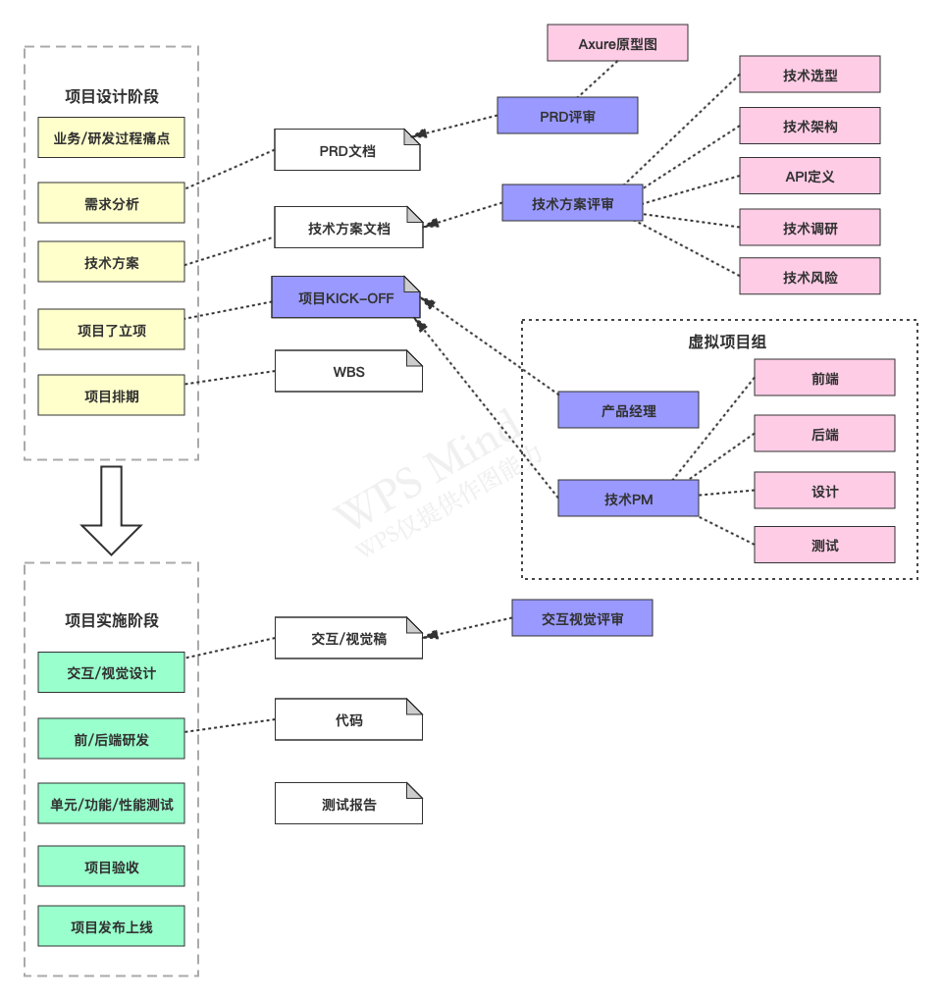
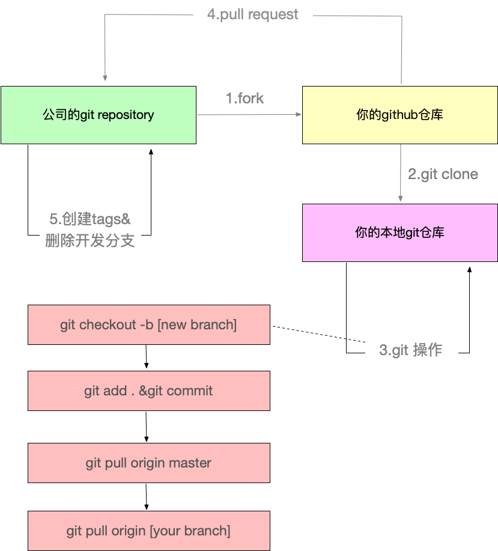
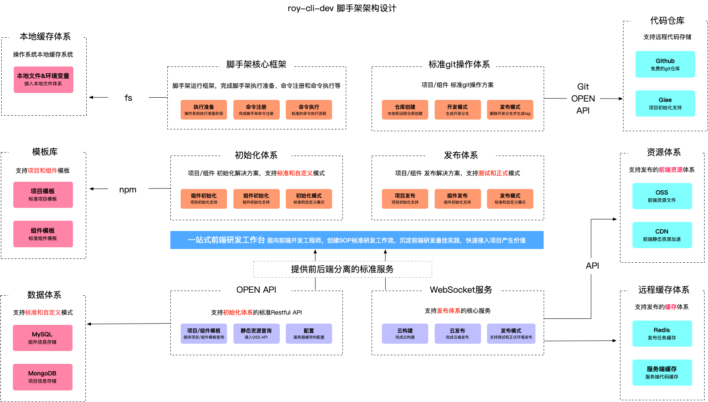
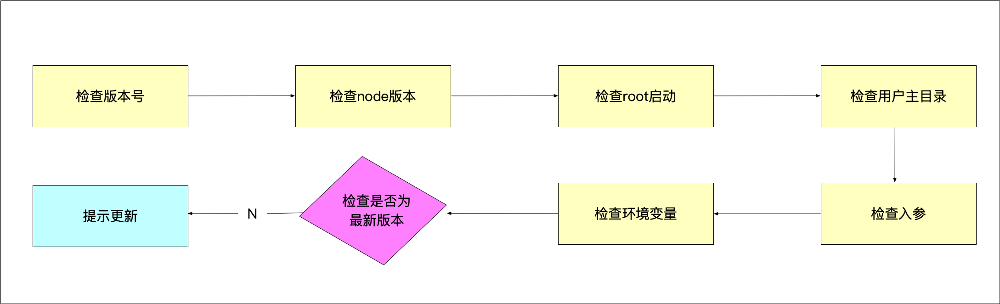
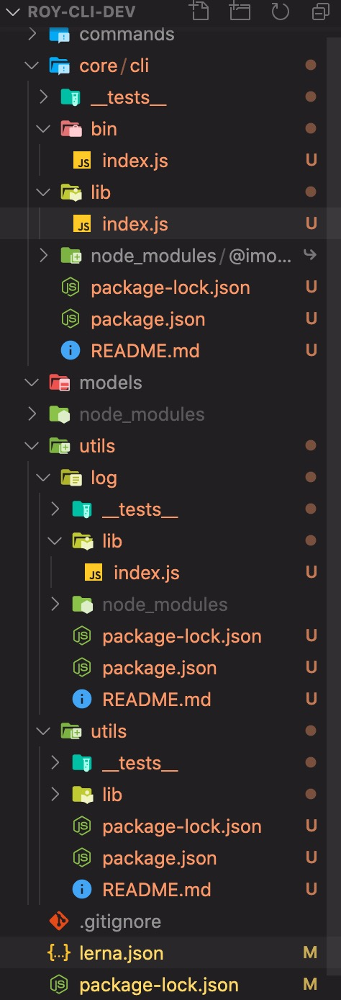

脚手架核心流程开发
脚手架需求分析
大厂做项目流程

痛点分析
- 创建项目/组件时，存在大量重复代码拷贝:快速复用已有沉淀
- 协同开发时，由于git操作不规范，导致分支混乱，操作耗时:制定标准的git操作规范并集成到脚手架
- 发布上线耗时，而且容易出现各种错误:定制标准流程混合规范并集成到脚手架
需求分析
- 通用的研发脚手架
- 通用的项目/组件创建能力
- 模板支持制定，制定后能够发布生效
- 模板支持快速接入，极低的接入成本
- 通用的项目/组件发布能力
- 发布过程自动完成标准的git操作
- 发布成功后自动删除开发分支并创建tag
- 发布后自动完成云构建、CDN、域名绑定
- 发布过程支持测试/正式两种模式
git规范

架构设计图

脚手架拆包策略
拆包原则
- 核心流程: core
- 命令:commands
- 初始化
- 发布
- 模型层:models
- Commands命令
- Project项目
- Component组件
- Npm模块
- Git仓库
- 支撑模块: utils
- Git操作
- 云构建
- 工具方法
- API请求
- Git API
core模块技术方案
命令执行流程
- 准备阶段
- 命令注册
- 命令执行
准备阶段的过程

涉及技术点
核心库
- import-local:优先执行本地的命令
- commander:命令注册
工具库
- npmlog:打印日志
- fs-extra:文件操作，基于fs封装了很多有价值的操作
- semver:版本比对
- colors:在终端中打印不同的颜色文本
- user-home:快速拿到用户的主目录
- dotenv:获取环境变量
- root-check:root账户的检查和自动降级
代码编写
通过week02-笔记里面的代码来做修改。
通过拆包原则，在根目录下创建 core，modules，commands，utils 目录，修改lerna.json里面packages的代码:
{ "packages": [ "core/*", "commands/*", "models/*", "utils/*" ], "version": "1.0.4" }然后把packages目录下的core文件夹移动到根目录core文件夹下面并把core改成cli，把utils文件夹拖到根目录下的utils目录下。

- 在
core/cli/bin/index.js里面写入下面代码:const importLocal = require('import-local'); if (importLocal(__filename)) { require('npmlog').info('cli','正在使用roy-cli-dev本地版本') } else { require('../lib')(process.argv.slice(2)); }
import-local作用是当全局node_modules和本地node_modules存在相同的库，优先加载本地的,npmlog为日志打印
- 检查版本开发
core/cli/lib/index.jsconst pkg = require('../package.json'); function checkPkgVersion(){ log.info('cli',pkg.version); }package.json里面的版本号，那么我们想一想为什么require加载资源的方式有那些？
require可以加载资源文件有.js,.json,'.node',加载其他的文件require会默认把他当做js来执行
- 加载
.js时需要我们必须在js文件中，使用module.exports或者exports= - 加载
.json时会使用JSON.parse进行转换编译从而得到一个json对象 .node是一个C++插件检查Node版本
core/cli/lib/index.js
function checkNodeVersion() {
//第一步，获取当前Node版本号
const currentVersion = process.version;
const lastVersion = constants.LOWEST_NODE_VERSION;
//第二步，对比最低版本号
if (!semver.gte(currentVersion, lastVersion)) {
throw new Error(colors.red(`roy-cli-dev 需要安装v${lastVersion}以上版本的Node.js`));
}
}
为什么我们要检查Node版本?
因为我们可能用到一些Node API在低版本是不支持的，所以我们要设置一个最低的版本号。
检查root启动
function checkRoot() { //使用后，检查到root账户启动，会进行降级为用户账户 const rootCheck = require('root-check'); rootCheck(); }检查用户主目录
const userHome = require('user-home');//获取当前用户主目录 const pathExists = require('path-exists').sync;//判断目录是否存在 function checkUserHone(){ if (!userHome || !pathExists(userHome)) { throw new Error(colors.red('当前登录用户主目录不存在!!!')); } }检查入参和debug模式开发 ```js function checkInputArgs(){ const minimist = require('minimist');//获取入口参数 const args = minimist(process.argv.slice(2)); checkArgs(args); }
function checkArgs(args){ if (args.debug) { process.env.LOG_LEVEL = 'verbose'; } else { process.env.LOG_LEVEL = 'info'; } log.level = process.env.LOG_LEVEL; }
10. 检查环境变量
```js
unction checkEnv() {
const dotenv = require('dotenv');//获取环境变量
const dotenvPath = path.resolve(userHome,'.env');
if (pathExists(dotenvPath)) {
config = dotenv.config({
path:dotenvPath
});
}
createDefaultConfig();
}
function createDefaultConfig(){
const cliConfig = {
home:userHome
}
if (process.env.CLI_HOME) {
cliConfig['cliHome'] = path.join(userHome,process.env.CLI_HOME);
} else {
cliConfig['cliHome'] = path.join(userHome,constants.DEFAULT_CLI_HOME);
}
process.env.CLI_HOME_PATH = cliConfig.cliHome;
}
- 检查当前版本是否是最新版本
使用lerna创建get-npm-info模块lerna create ./utils/get-npm-info，在utils/get-npm-info里面编写代码:
const axios = require('axios');
const urlJoin = require('url-join');
const semver = require('semver');
function getNpmInfo(npmName,registry) {
if (!npmName) {
return null;
}
const registryUrl = registry || getDefaultRegistry();
const npmInfoUrl = urlJoin(registryUrl,npmName);
return axios.get(npmInfoUrl).then(response => {
if (response.status === 200) {
return response.data;
}
return null;
}).catch(err => {
return Promise.reject(err);
})
}
function getDefaultRegistry(isOriginal = false) {
return isOriginal ? "https://registry.npmjs.org/" : "https://registry.npm.taobao.org/";
}
async function getNpmVersions(npmName,registry) {
const data = await getNpmInfo(npmName,registry);
if (data) {
return Object.keys(data.versions);
} else {
return [];
}
}
function getSemverVersions(baseVersion,versions) {
return versions.filter(version =>
semver.satisfies(version,`^${baseVersion}`)
).sort((a,b)=> semver.gt(b,a));
}
async function getNpmSemverVersion(baseVersion,npmName,registry) {
const versions = await getNpmVersions(npmName, registry);
const newVersions = getSemverVersions(baseVersion, versions);
if (newVersions && newVersions.length > 0) {
return newVersions[0];
}
}
module.exports = {
getNpmInfo,
getNpmVersions,
getSemverVersions,
getNpmSemverVersion
};
在core/cli/package.json里面添加链接库"@roy-cli-dev/get-npm-info": "file:../../utils/get-npm-info",core/cli/lib/index.js代码如下:
async function checkGlobalUpdate() {
//1.获取当前版本号和模块名
const currentVersion = pkg.version;
const npmName = pkg.name;
//2.调用npm API,获取所有版本号
const {getNpmSemverVersion} = require('@roy-cli-dev/get-npm-info');
//3.提取所有版本号，比对哪些版本号是大于当前版本号
const lastVersion = await getNpmSemverVersion(currentVersion,npmName);
if (lastVersion && semver.gt(lastVersion,currentVersion)) {
//4.获取最新的版本号，提示用户更新到该版本
log.warn(colors.yellow(`请手动更新${npmName},当前版本:${currentVersion},最新版本:${lastVersion}
更新命令:npm install -g ${npmName}`))
}
}
检查是否需要更新的步骤为以上四步。